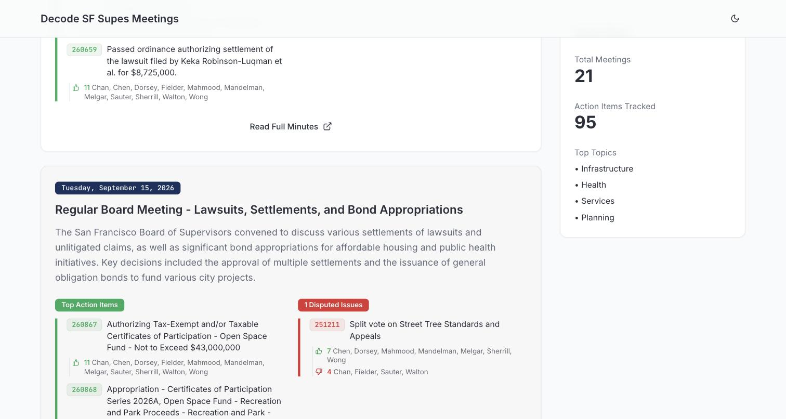
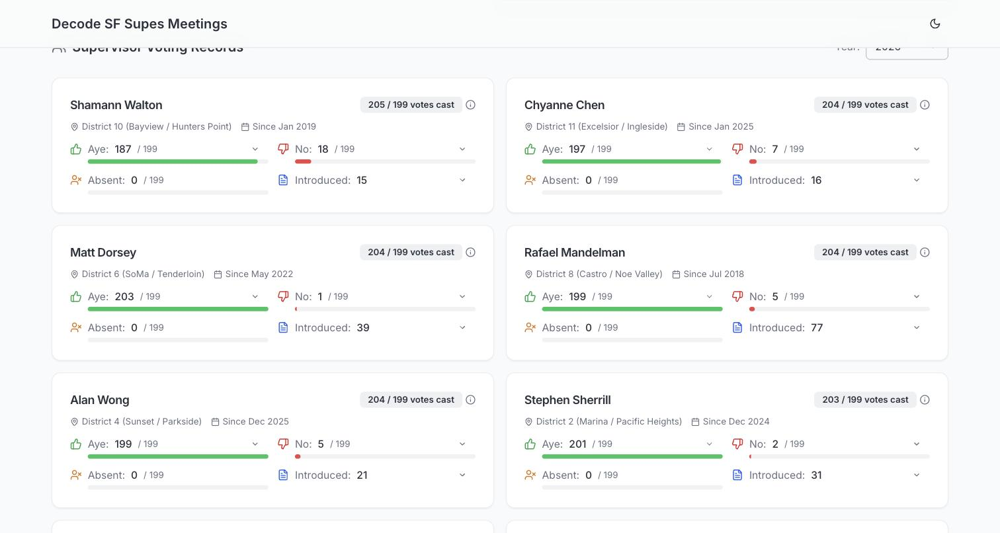

Why I built it
San Francisco’s Board of Supervisors meets most Tuesdays and votes on everything from affordable housing bonds to cannabis cafés to who gets a landmark plaque. All of it is public, but it lives in long, procedural minutes that almost nobody reads. If you want to know how the city is handling the things you care about, or how the person representing your district actually votes, you have to dig.
Decode SF Supes Meetings does the digging. It reads each meeting’s official minutes, summarizes them in plain English, and sorts them by theme, so constituents can see at a glance how pressing issues are being handled and where their supervisor stands.

What it does
- Meeting digests
- Every regular meeting gets a short summary, a theme, and its top action items by file number, with who voted aye and no.
- Split votes, flagged
- Most items pass 11 to 0. The ones that don’t are pulled out as disputed issues, because that’s where the board actually disagrees.
- Supervisor records
- A card for each of the eleven supervisors: district, time in office, ayes, noes, absences, and how much legislation they’ve introduced.
